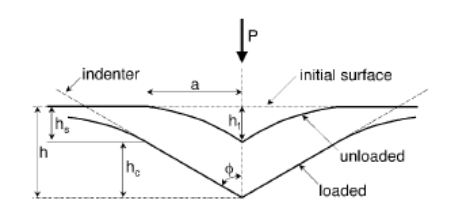
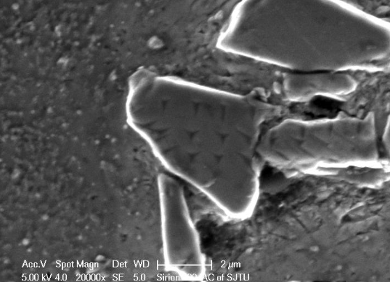
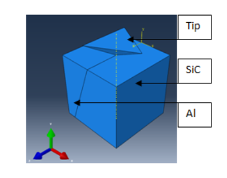
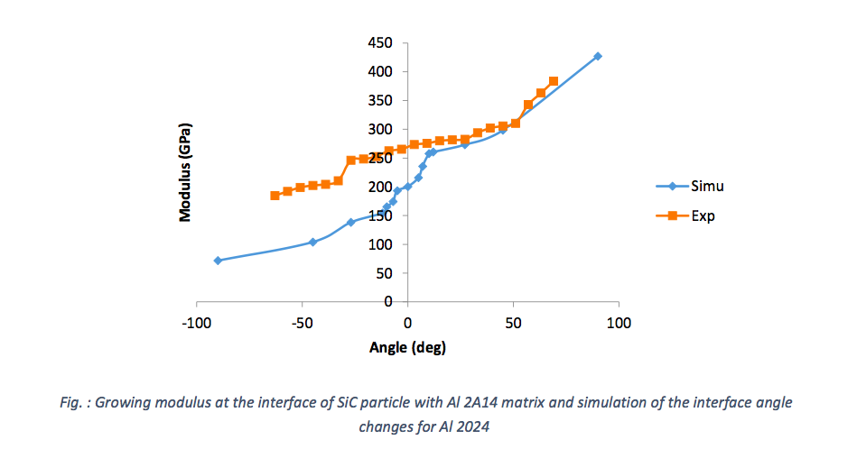

Interface characteristics of silicon carbide particles reinforced aluminum composites
Experimental investigation and finite element simulation
-
The NanoIndentation Process

NanoIndentation is a material characterization method which allows to establish modulus and microhardness under nano-scales. The indentation test consists of applying a load on a sample with a tip - which can be of different shapes (Berkovich, spherical, conical, flat...). The depth of the indentation as well as the load is constantly saved during this mesurement process and allows to calculate the modulus and hardness of a material easily. -
Experimentation

Interface characteristics for aluminum matrix composites were compared for different matrixes: Pure Al, Al6061, Al2A14 and Al2024. Nanoindentation experiments results showed that at the interface between the particle and the matrix, the modulus and hardness is highly dependant on the matrix nature and especially depends on the yield stress of the matrix. Variations in hardness and modulus are due to the angle formed between the particle and the matrix, relation between angle variation and mechanical properties was put in evidence in the 3D simulation of the characterization process. For each matrix, here is a summary of the resultsExperiment Results
Matrix Modulus (GPa) Hardness (GPa) Al2024 [200;400] [13;41] 2A14 [200;400] [13;38] Al6061 [150;300] [13;38] Pure Al [80;150] [2;15] -
Simulation

A 3D model was developed to simulate the nanoindentation process, the model was developped with python abaqus library. The 3D model established needed a dense mesh and therefore a significant computation time but provides a detailed characterization of the true geometry of the indenter to ensure accurate results. C3D8 mesh proved to have the more efficient ratio for computing time and accuracy of the results and was chosen for the simulation. Furthermore, correction were applied to the yield strength of the matrices, and to the cohesive surface to fit with experimental results. The model established enables to corelate particule angle and mechanical properties. The more spherical the particules are, the higher the mechanical properties. -
Results

The load-displacement curves for different angles of the interface between the particle and the matrix were analyzed for all the matrices, and compared with the experimental results. The angle between the matrix and the particle increases the modulus and hardness of the material increases. Comparison between experiments and simulations showed that the yield stress of the material had to be corrected in order to fit the results. Those differences can be cause by the bluntness of the tip, the GND or the orientation of grains.
Summary
随着对金属基复合材料的需求不断增加，以及高力学性能和各向同性的要求，许 多研究人员对铝基复合材料进行了实验。本研究建立了模型来了解碳化硅(SiC)颗粒增强 铝基复合材料的界面行为。碳化硅颗粒对碳化硅/铝复合材料力学性能的影响取决于颗 粒的体积分数，分布和大小, 同时也取决于显著影响复合材料特性的增强体/基体界面。 因此，提取界面特征是至关重要的，它让我们能够预测复合材料的失效机理。 本研究的目的是探讨碳化硅颗粒和铝基体之间不同的界面特性。 我们将特别关注 颗粒形状对复合材料性能的影响。运用纳米压痕实验来获取复合材料的机械性能，并用 有限元数值模拟对实验结果进行验证。在构建颗粒/基体界面压痕模型的过程中，涉及 到不同复合界面的几何学以及不同铝基体材料的模拟。在实验和模拟部分，分别对 4 种 具有不同屈服强度的基体进行测试:纯 Al, Al6061, Al2A14 和 Al2024 。针对每一种复合 材料，提取铝和碳化硅界面附近的硬度和模量，结果显示复合材料的硬度和模量对颗粒 形状和基体性质具有强烈依赖。最后，数值模型与纳米压痕实验结果的拟实更证明上述 结果的精确性。 A metal matrix composite (MMC) is composite material with at least two constituent parts, one being a metal, the other material may be a different metal or another material, such as a ceramic or organic compound. This kind of material is widely used in the aerospace industry because of its high mechanical behaviors and isotropic properties. In recent years, MMC became less expensive and more accessible, therefore more and more research are carried out on this material. This project is in line with this trend, as it focused on a specific MMC : silicon carbide particles reinforced aluminum composites, with an emphasis on this material interfaces properties In this research, a 3D model was developped to try to better understand the behavior of silicon carbide (SiC) particles reinforced aluminum composites at particules' interfaces. The influence of SiC particles over mechanical properties of SiC/Al composite depends on volume fraction, distribution and size of reinforced particles, but also on the reinforcement/matrix interface which significantly impact the bulk properties of the material. Extracting the characteristics at the interface is essential as it allows to predict failure mechanisms. The aim of this research was to investigate the properties at the interface between SiC particle and the aluminum matrix for different kind of matrixes. An emphasis was made on the influence of the shape of the particle and the aluminum matrix nature. Nanoindentation method was used in order to extract the mechanical properties and the experimental results were validated under are 3D finite element simulation (FE). For the experimental and simulation part of this project, four different matrixes with different yield strength were tested : Pure Al, Al6061, Al2A14 and Al2024 . For each composites, hardness and modulus were extracted at the vicinity between aluminum and SiC particles. The results showed a strong dependency on the particle shape and on the matrix nature. The numerical model was compared with the experimental nanoindentation results in order to confront the veracity of the simulation and establish a model which could be used to test further matrixes and particule shapes.